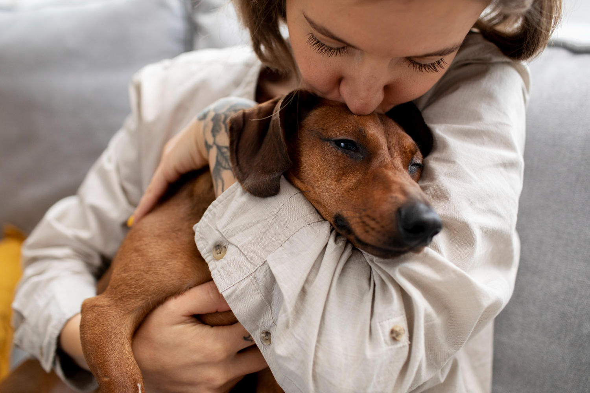

¡Bienvenido a Nuestra pagina web 🐾💙
Nosotros creemos que cada mascota merece un hogar lleno de amor. Somos un espacio dedicado al bienestar animal, donde puedes aprender sobre el cuidado responsable de las mascotas, encontrar un amigo peludo que necesita un hogar o ayudar a otros a encontrar la familia perfecta para su compañero.
Si buscas adoptar, aquà te ayudamos a conectar con perros y gatos en busca de un hogar. Y si necesitas dar en adopción a una mascota, te acompañamos en el proceso para asegurarnos de que encuentre una familia responsable y amorosa.
¡Juntos podemos hacer la diferencia! Explora, infórmate y sé parte de esta hermosa comunidad. 🐶🐱💕